Meubelen
Landelijke, stoere en sobere stukken voor binnen en buiten.
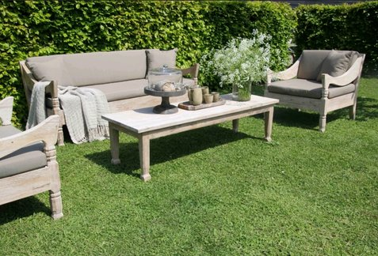
Woonwinkel aan huis in Zonhoven
Bij Maison Sissi vind je stoere meubelen, zachte woondecoratie, sfeervolle stukken uit eigen atelier en persoonlijk stylingadvies met de rustige, landelijke ziel van Sarina.
Welkom
Maison Sissi is open op vooraf aangekondigde sfeerdagen of na afspraak. Je vindt er landelijke meubelen, decoratie en zorgvuldig gekozen accenten die een interieur meteen meer rust, warmte en persoonlijkheid geven. Ook voor interieur- en stylingadvies aan huis ben je hier aan het juiste adres.
Landelijke, stoere en sobere stukken voor binnen en buiten.
Kruiken, kaarsen, textiel, stolpen en kleine details met karakter.
Seizoensdecoratie en unieke creaties onder Sissi's Homemade.
Interieur- en stylingadvies aan huis, op maat van jouw woning.
Open Sfeerdagen
Iedereen is welkom om kennis te maken, inspiratie op te doen en te genieten van een drankje. Nieuwe data volgen weldra en worden gedeeld via Facebook, Instagram en TikTok.
Het blijft 24/7 mogelijk om via een WhatsApp-berichtje een bestelling te plaatsen voor verzending of om af te halen. Afhalen kan na afspraak of tijdens de Open Sfeerdagen.
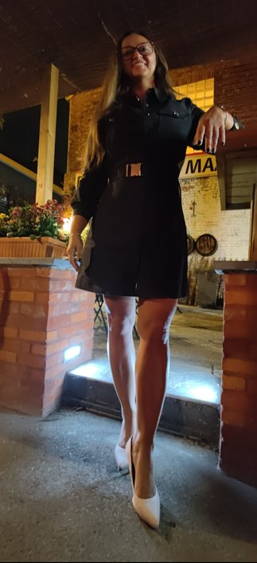
Wie ben ik
Landelijk inrichten, styling en decoreren is al jarenlang mijn passie. Na 20 jaar ervaring in de vastgoedsector, waar ik modelwoningen en appartementen stylde en mensen interieuradvies gaf, koos ik voluit voor mijn woonwinkel aan huis.
Knusse groetjes, Sarina
Nieuw
Hoe mooi zijn deze landelijke outdoor meubelen? Ze zijn verkrijgbaar in twee versies: met java leuning of met ronde leuning. Je kan ze bij Maison Sissi in pre-order bestellen en rustig komen proefzitten.
Steeds gratis levering.
Inclusief taupe all weather zit- en rugkussens
1925€Inclusief taupe all weather zit- en rugkussens
1485€Inclusief taupe all weather zit- en rugkussens
935€140 cm x 60 cm
895€40 cm x 40 cm
39,95€Sfeerbeelden
Zachte natureltonen, verweerd hout, ruwe materialen en warme details vormen samen de herkenbare Maison Sissi sfeer.
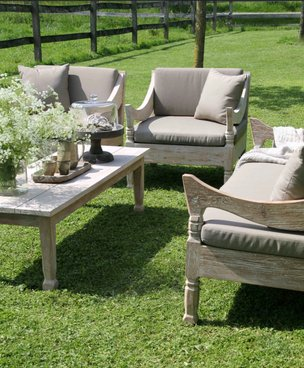
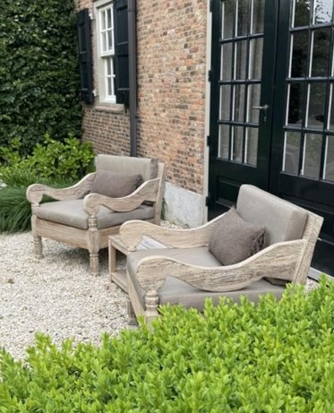
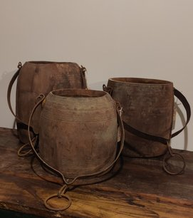
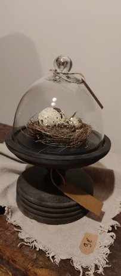
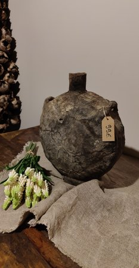
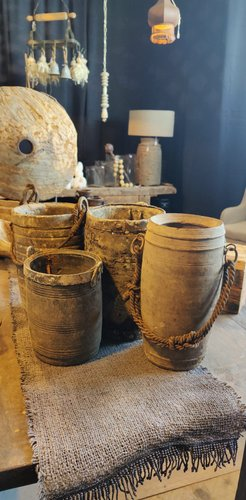
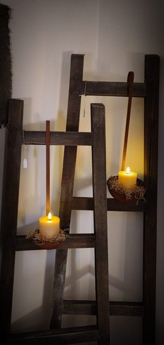
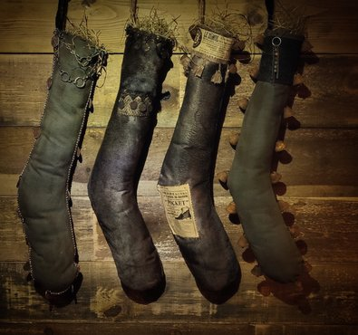
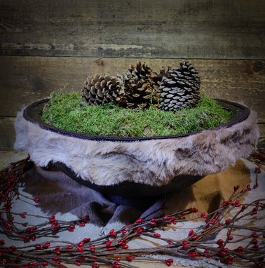
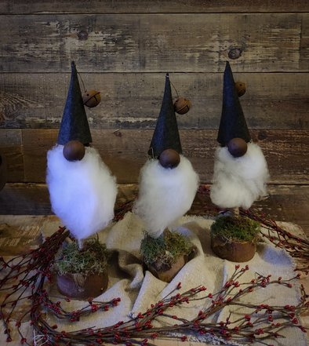
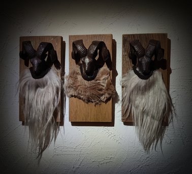
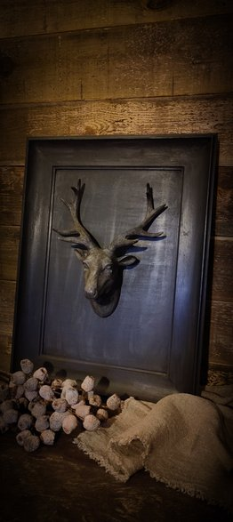
Merken en eigen atelier
Bij Maison Sissi vind je een uitgebreid gamma aan diverse merken, aangevuld met eigen creaties uit het atelier. Veel stukken zijn uniek of seizoensgebonden; prijzen staan vaak op het label in de winkel of op de foto.
Prijslabel op foto
€9Prijslabel op foto
€93Iedere maand maak je bij je aankopen kans op deze box.
t.w.v. €50Contact
Stuur gerust een bericht. Maison Sissi helpt je graag verder met opening op afspraak, sfeerdagen, bestellingen via WhatsApp en advies voor je interieur.